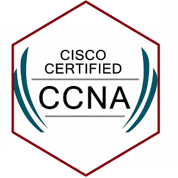

Welcome to Jurney To Canada
Full-Stack Curriculum
Learn the skills to become a Network Engineer

Introduction to CCNA
- Network Fundamentals (20%):
Core routing/switching concepts, IPv4/IPv6 addressing, subnetting, and basic architecture (routers, switches, cabling).
- Network Access (20%):
VLANs, trunking (802.1Q), Inter-VLAN routing, Spanning Tree Protocol (STP), EtherChannel, and basic wireless principles.
- IP Connectivity (25%):
Static routing, OSPFv2 (single-area configuration), and how routers make forwarding decisions.
- IP Services (10%):
NAT, NTP, DHCP, SSH, and basic QoS concepts.
- Security Fundamentals (15%):
Threat vectors, access control lists (ACLs), port security, VPNs, and wireless security protocols (WPA2/WPA3).
- Automation and Programmability (10%):
Basics of software-defined networking (SDN), controller architectures, REST APIs, and configuration management tools (JSON, Ansible, Puppet, Chef).
Introduction to CSS
CSS is used to style a webpage